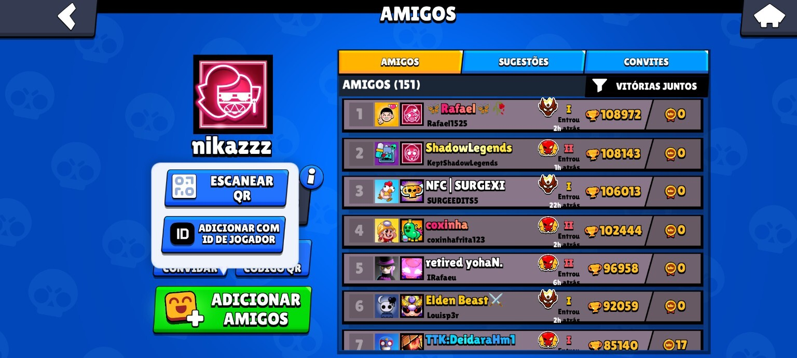
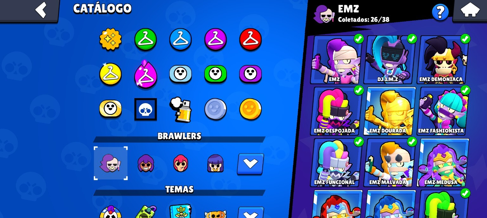
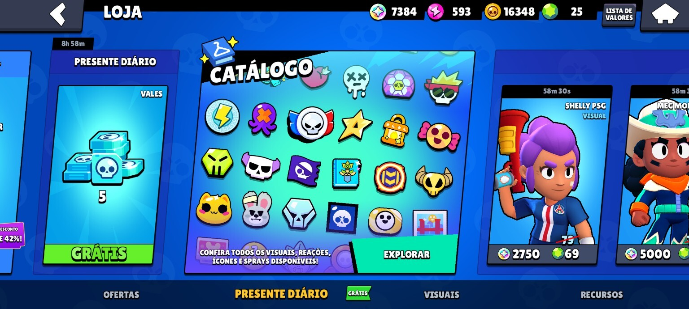
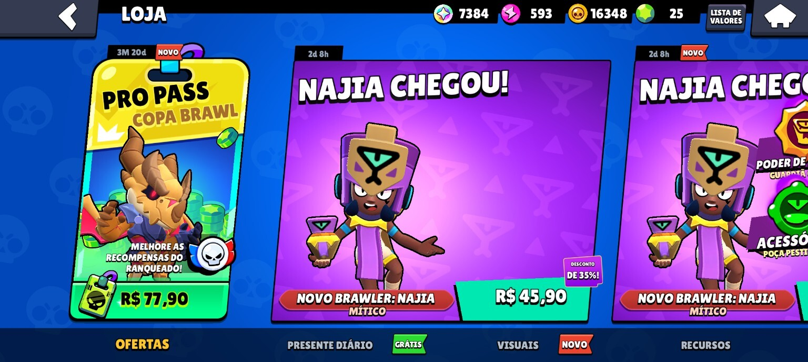
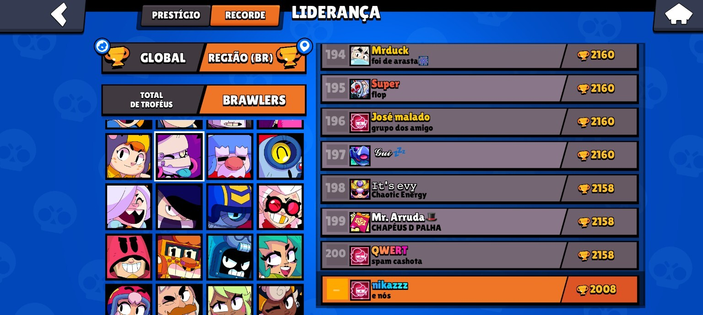
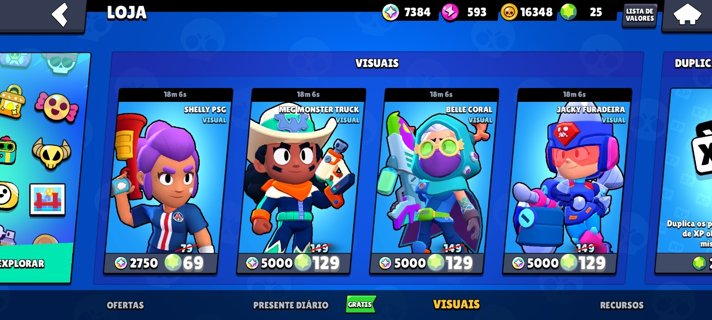

PÚBLICO-ALVO
Jogadores mobile, principalmente jovens, que valorizam progressão, competição e personalização.
Proposta de redesign com foco em navegação, catálogo, sistema de amigos, loja e acesso a informações competitivas, reduzindo confusão visual e melhorando a experiência de jogadores frequentes.
Jogador frequente • 84k troféus
O aplicativo analisado é o Brawl Stars, disponível em plataforma mobile. Trata-se de um jogo competitivo com partidas rápidas, progressão constante, sistema social, catálogo de itens, loja, rankings e recursos de personalização. Seu público-alvo principal envolve jogadores jovens e usuários frequentes que valorizam evolução, desempenho, socialização e personalização da experiência.
Jogadores mobile, principalmente jovens, que valorizam progressão, competição e personalização.
Catálogo, loja, sistema de amigos, rankings, progressão, visuais, ofertas e recursos competitivos.
Uso frequente, navegação rápida pelo celular e contato constante com menus, filtros e recompensas.
O principal problema está na desorganização de áreas importantes da interface, como catálogo, sistema de amigos, loja e navegação competitiva. Além disso, funções que antes eram acessadas de forma direta passaram a exigir mais etapas, como o acesso à liderança de brawlers. Isso aumenta a carga cognitiva, dificulta a navegação e torna a experiência menos intuitiva.
Dificuldade para localizar skins, recursos, amigos e opções importantes de forma rápida.
Excesso de informação visual, filtros pouco eficientes e remoção de acessos mais diretos em partes da navegação.
Mais passos para concluir tarefas, mais confusão e mais frustração durante a navegação.
A persona abaixo representa um jogador frequente que sofre diretamente com a falta de clareza do fluxo, da organização e do acesso a certas funcionalidades.
17 anos • Estudante de análise e desenvolvimento de sistemas • Rio de Janeiro
Flávio joga Brawl Stars constantemente, todos os dias, já possui cerca de 84 mil troféus e acompanha o jogo de forma crítica. Também está começando a se posicionar como influenciador, participando de conversas sobre mecânicas, skins, loja, liderança, desbalanceamento e problemas de navegação. Usa o jogo com frequência alta e percebe rapidamente quando uma função deixa de ser intuitiva.
Encontrar amigos, skins, ofertas e funções com rapidez e clareza.
Catálogo confuso, amigos mal organizados, excesso de elementos e filtros fracos.
Melhorar no jogo, acompanhar atualizações e produzir conteúdo sobre a experiência.
Alta familiaridade com apps, jogos competitivos e interfaces digitais.
“Se eu uso o jogo todo dia, eu deveria achar essas coisas muito mais fácil.”
Incômodo e frustração quando funções simples ficam escondidas ou desorganizadas.
Porque representa um jogador ativo, experiente e crítico, que percebe as falhas com mais clareza.
As imagens abaixo evidenciam excesso de informação, organização pouco eficiente e dificuldade de encontrar funções de forma rápida.

Busca e organização pouco práticas, com foco em troféus em vez de facilitar localização.

Muitas opções, ícones e categorias competindo pela atenção do usuário.

Blocos promocionais excessivos deixam o fluxo visual pesado e cansativo.

Comunicação visual forte, mas com comparação menos fluida entre opções.
Muitos elementos ao mesmo tempo reduzem a priorização das ações principais.

O acesso à liderança de brawlers ficou menos direto, exigindo mais etapas.

Interface chamativa, mas ainda com excesso visual e leitura cansativa.
A jornada atual mostra as etapas do fluxo, considerando ação, pensamento, emoção, ponto de contato e ponto de frustração.
Entra no jogo e tenta localizar rapidamente a função desejada.
“Quero chegar logo no que eu preciso sem ficar procurando.”
Expectativa e agilidade.
Tela inicial do jogo.
Muitos elementos visuais concorrem pela atenção logo no início.
Vai até catálogo, amigos, loja ou rankings.
“Isso deveria estar mais fácil de encontrar.”
Leve incômodo.
Menus internos, botões e abas do sistema.
Busca pouco objetiva, excesso de opções e baixa hierarquia visual.
Tenta concluir a tarefa, como comparar ofertas ou acessar liderança.
“Antes isso parecia mais direto.”
Frustração e esforço mental.
Catálogo, loja, rankings e sistema competitivo.
Mais etapas do que o esperado e caminhos menos diretos para funções importantes.
Consegue chegar ao objetivo após navegar por várias telas.
“Deu certo, mas poderia ter sido muito mais rápido.”
Alívio misturado com insatisfação.
Telas finais de catálogo, ofertas ou ranking.
Baixa eficiência na execução da tarefa.
Os wireframes representam a organização inicial da nova solução, destacando fluxo, hierarquia e reposicionamento das principais funções.
Menu principal com menos ruído visual, foco nas ações mais usadas e melhor separação de áreas.
Separação por personagem, preço, favoritos e coleção, com navegação mais previsível.
Retorno de acesso mais direto aos rankings e informações competitivas dos brawlers.
Esta página funciona como o protótipo high fidelity da solução, apresentando visual, estrutura, organização de conteúdo e proposta de reorganização do fluxo.
Separar por personagem, raridade, preço, favoritos e coleção de forma mais clara.
Busca por nome, favoritos, recentes e organização além da quantidade de troféus.
Reduzir excesso de banners simultâneos e destacar melhor ofertas prioritárias.
Reduzir etapas para acessar rankings e informações competitivas dos brawlers.
Navegação mais rápida, menos confusão e experiência mais agradável para jogadores frequentes.
A jornada proposta evidencia redução do número de etapas, melhoria da navegação, redução da frustração e maior eficiência de uso.
O jogador identifica mais rápido para onde ir.
Filtros melhores facilitam achar skins, amigos e itens.
Funções como liderança passam a ter acesso mais direto e previsível.
O usuário conclui tarefas com menos esforço e menos frustração.
O problema identificado foi a desorganização visual somada ao aumento de etapas para acessar funções importantes, como a liderança de brawlers. As causas principais envolvem excesso de informação, baixa hierarquia visual e falta de atalhos eficientes. O redesign resolve essa dor ao reorganizar catálogo, loja, amigos e acessos competitivos, aplicando princípios de UX como clareza da interface, redução de carga cognitiva, consistência visual, feedback ao usuário e eficiência de uso.